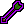

In this release
The bank standers can make divine potions again. You can now turn run off and the walker leaves it off, and plugins can ask the Break Handler to wait until they're somewhere safe before a break. This release ships Microbot client 2.6.38 (on RuneLite 1.13.3), together with fixes to two Hub plugins, Huey Prayer and Flipper, and launcher 3.2.17, which walks new players through their first launch.
Divine potions in the bank standers
Say you set up Bank's BankStander or AutoBankStander for  divine super combat potions: 27 super combat potions and 108 crystal dust per trip. The first trip went fine. From the second trip on, the plugin took out 27 crystal dust instead of 108, which is only enough for six potions, and it kept doing that trip after trip.
divine super combat potions: 27 super combat potions and 108 crystal dust per trip. The first trip went fine. From the second trip on, the plugin took out 27 crystal dust instead of 108, which is only enough for six potions, and it kept doing that trip after trip.
From the second trip: 27 potions but only 27 crystal dust, enough for six divine potions.
Every trip: 27 potions and 108 crystal dust, so all 27 potions get made.
This wasn't only a bank stander problem. Any plugin that took out two items with different "Withdraw-X" amounts, one straight after the other, could get the first amount for both items. We fixed it in the client, so every plugin that banks this way gets the right amount now. You don't need to change any plugin settings.
Run stays off when you turn it off
If you unticked the run option in the Microbot settings to save run energy, the walker still turned run back on as soon as you had 10% energy. Banking turned it on too. Now nothing turns run on while that option is off. You can still turn run on yourself, and plugins can still turn it off.
Breaks that wait for a safe spot
Until now, when a break started, the Break Handler paused your plugin wherever it was, even halfway through something risky. Plugins can now ask the Break Handler to wait until they reach a safe spot, for example to heal and step away from an NPC first. The Break Handler waits up to two minutes. If the plugin isn't ready by then, the break is called off rather than started somewhere unsafe.
Plugins only get this once their author adds it, and plugins that don't use it take breaks exactly as before.
Launcher 3.2.17
The first time you open the launcher, a setup guide walks you through it in six steps. It starts by asking which account you have, Jagex, normal or Microbot, then shows how to add your Jagex characters, what client RAM and the proxy are for, and how to stay safe. Each step lights up the button it talks about, and Show me lets you click it yourself before you come back to the same step. If you added two characters, say Zezima and Lynx Titan, the guide lists them once you're back from the Jagex login. Tick Don't show this again on startup if you don't need it.
Under Client RAM there's a new Spoof hardware IDs option, on by default. Each account then sends its own random random.dat seed when it logs in, instead of the one stored on your computer. Pick a setting for each account and keep it: switching it for an account that has already logged in sends both values. A change applies the next time you start a client.
The launcher also looks a bit tidier: the logo is now a slim header at the top of the sidebar, so the account list moves up, and the scrollbars match the dark and gold theme instead of the default grey ones.
Plugin updates
Outside trio mode,

protection prayers turn off again after a projectile hits, as Disable after impact promises. In trio mode, autobalance and fixed pillar roles switch to the right prayer. On the Hueycoatl's summit, autobalance counts every teammate who has loaded in, not only those within a few tiles of you. Prayers turn off when the Hueycoatl dies or you leave the arena, and come back on with the next kill's first attack. Flipper1.2.81
Flipper1.2.81When Flipping Copilot highlights an offer to modify or abort, the mouse used to move to the offer and then not click it, so the offer stayed as it was. Flipper now clicks and carries out the suggestion.
Client
- Switching your Inventory Setups profile on the login screen no longer throws an error.
 Closing the Link to Microbot account window with its close button no longer throws an error.
Closing the Link to Microbot account window with its close button no longer throws an error. Plugins that walk to the nearest monster, like Account Builder, no longer stop with an error when that monster has no known spawn spot. They just don't walk.
Plugins that walk to the nearest monster, like Account Builder, no longer stop with an error when that monster has no known spawn spot. They just don't walk. The Jagex Accounts sidebar panel is hidden. Logging in with your Jagex account from the launcher works as before.
The Jagex Accounts sidebar panel is hidden. Logging in with your Jagex account from the launcher works as before.- For plugin developers: the client starts from an IDE on macOS and on a fresh profile without crashing.
How to update
Restart Microbot to pick up client 2.6.38. The next time you open the launcher it says a new version is available: click Install to get 3.2.17, or download it from the home page. Plugin updates show up in the Microbot Hub panel inside the client. Something not working? Tell us on Discord.
Game images © Jagex Ltd., via the Old School RuneScape Wiki.